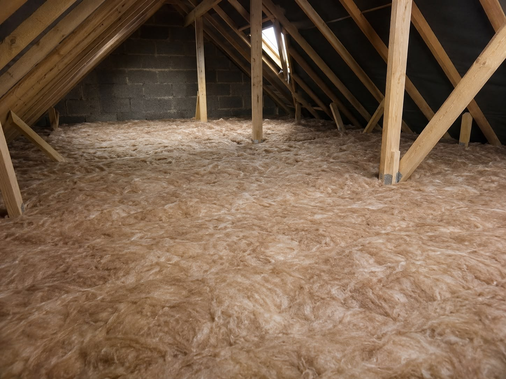
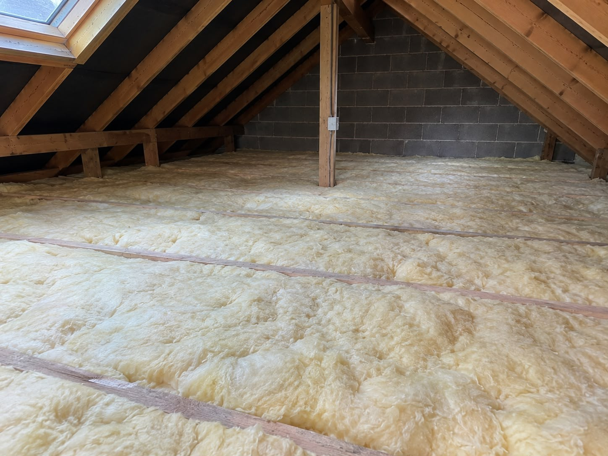
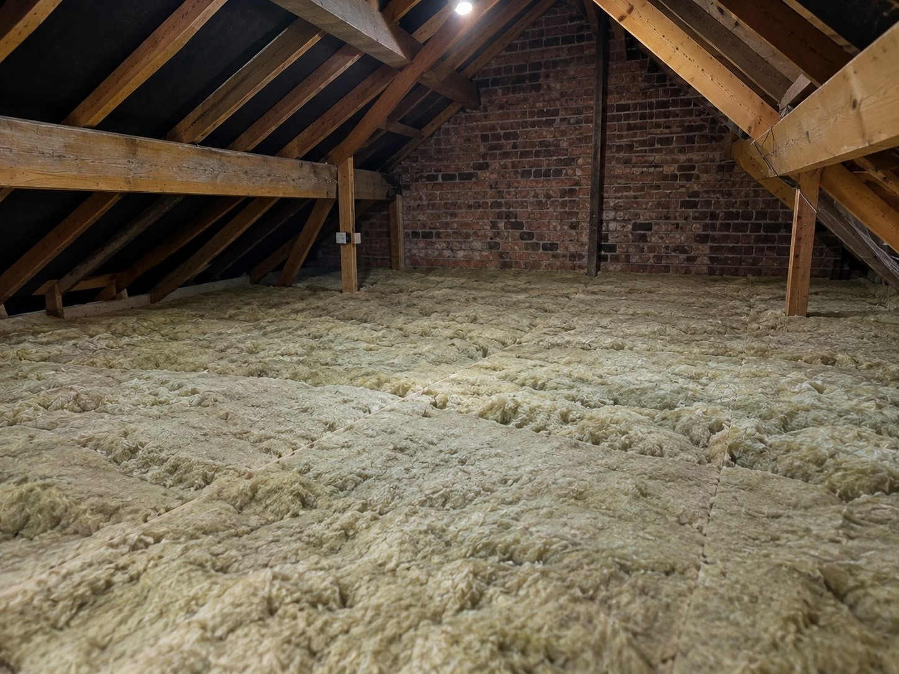

01 / INSTALLATION
Full Loft Insulation Installation
A considered approach to making your home more comfortable.
Explore serviceLoft insulation and boarding services to help Northampton homeowners make more of the comfort they have at home.

At Ever Warm Northampton, our experienced team specialises in loft insulation services.
We carry out loft insulation installations for residents across Northampton, helping homeowners reduce energy costs and retain heat within their homes.
From new insulation to extra usable space, explore our four core services for Northampton homes.
A considered approach to making your home more comfortable.
Explore service
Clearing existing insulation to prepare for what comes next.
Explore service
Extra insulation for lofts that could use a little more.
Explore serviceExplore the service that sounds closest to your situation, or send us a question if you're unsure.
Not sure which service is suitable? Ask us about your loft
There is no single approach for every property. Before choosing between new insulation, a top-up or boarding, it helps to understand what is already in your loft and how you want to use the space.
Age, depth, coverage and condition can all affect which work is appropriate.
Stored items, access hatches, pipework and wiring can affect how work is planned.
Insulation and boarding should be considered together so insulation is not compressed and ventilation is maintained.

Every loft is different. We help you start with a straightforward conversation about what your space needs and which services may be suitable.
Explore how loft insulation can reduce heat lost through your roof.
Ask about practical loft boarding options for suitable homes.
Speak to us about the loft and the service you're considering.
Explore the loft photographs supplied for this website. Select an image to take a closer look.
Photos supplied for Ever Warm Northampton. Individual properties and project requirements vary.
Not sure what your loft needs yet? You don't need to have all the answers before contacting us.
Give us a call or share a few details about your space.
Insulation, removal, boarding, top-ups—or a mix of services.
Contact the team to discuss available options for your home.
Useful points to think about before any loft insulation or boarding work begins.
Roof-space airflow needs to be considered so insulation does not obstruct necessary ventilation paths.
Access hatch size, headroom and safe movement may influence the practical options for your property.
Wiring, downlights, water tanks and pipework can need particular care. Mention these when making an enquiry.
Where storage boarding is considered, the build-up should allow suitable insulation depth without compression.
These are general considerations, not a property assessment. Specific solutions depend on the loft and applicable requirements.
Looking for something more specific? We're happy to discuss your loft and the services available.
Ask us a questionOur services include full loft insulation installation, loft insulation removal, loft boarding and insulation top-ups.
Yes. Tell us about your loft and any work you are considering, such as insulation alongside boarding.
Ever Warm Northampton provides loft insulation services for residents across Northampton. Please get in touch to check your specific location.
Call 07518 581277 or email enquiries.pillar@gmail.com. You can also use the enquiry form, which opens your email app.
Check whether insulation already exists and whether there are visible gaps, thin areas or damage. Contact us to discuss what you have; suitability depends on the property.
Loft boarding can help make suitable areas easier to access and use for storage. Structural capacity, insulation and ventilation need to be considered first.
Ventilation should be considered during planning. Insulation should not simply be packed into ventilation openings or against unsuitable fittings.
Properly specified loft insulation can help reduce heat loss. Actual energy savings depend on factors including the property and its existing insulation.
Thinking about insulation, removal, boarding or a top-up? We’d be happy to hear what you have in mind.
Serving homeowners in Northampton
We'll prepare an email for you to send directly to our team.